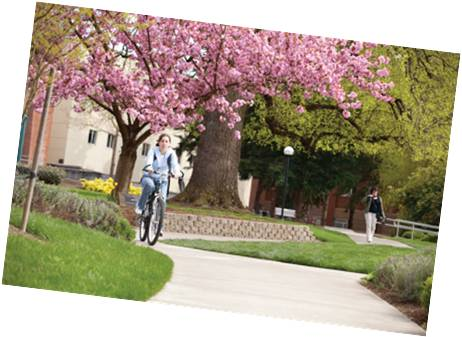
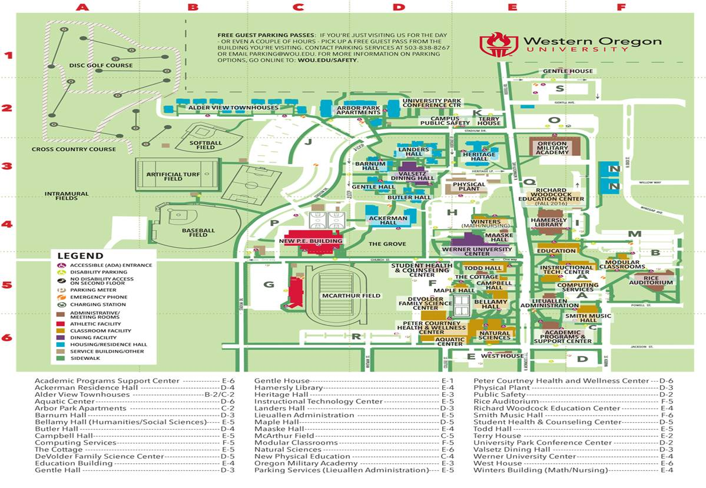
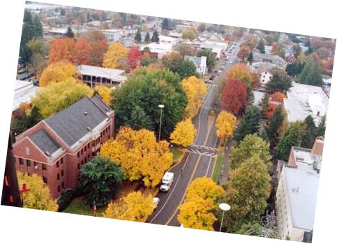
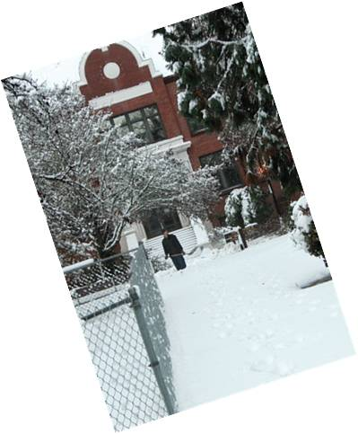
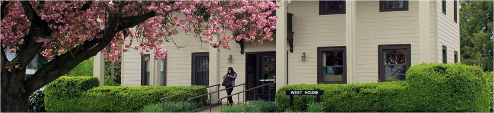
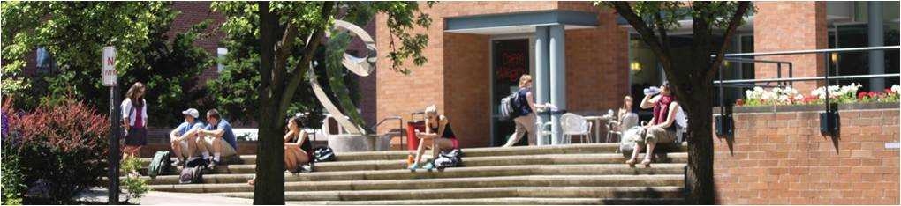
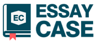
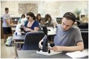
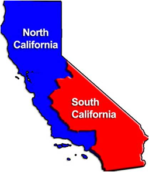

---所在位置 西俄勒冈大学所在的俄勒冈州蒙默思市Monmouth，有一万人口，城市以景色迷人，人民友善和治安良好而著称, 靠近太平洋，位于富饶的威拉米特河谷中Willamette River Valley。车程距首府塞勒姆20分钟, …
---所在位置
西俄勒冈大学所在的俄勒冈州蒙默思市Monmouth，有一万人口，城市以景色迷人，人民友善和治安良好而著称, 靠近太平洋，位于富饶的威拉米特河谷中Willamette River Valley。车程距首府塞勒姆20分钟, 波特兰75分钟。这里是成千上万的美国开拓者到西部寻求美好生活的理想之地。该地区物产丰富，水果，蔬菜，海鲜及禽蛋肉类，在当地市场上一应俱全。
美国俄勒冈州北接华盛顿州，南邻加利福尼亚和内华达，东接雄伟的落基山，西濒浩淼的太平洋。风景秀丽，雨水丰沛，四季如春。文化气氛浓郁，有许多大型画廊、歌剧院等文化设施。美国诸多的一流企业，如耐克、英特尔、戴尔、惠普等大公司的国际总部都设在俄勒冈州，波音、IBM也在俄勒冈州设有工厂、办公室或办事处等。
---历史与环境
西俄勒冈大学,历史悠久，文化底蕴深厚。大学建于1856年，是俄勒冈州及美国密西西比河以西的第一所公立大学。经过美国西北高校委员会NWCCU、美国教师教育认证国家委员会NCATE、全美教师教育学院协会AACTE、国家音乐学院协会NASM和俄勒冈州教师标准与从业委员会TSPC等多个专业机构鉴定和确认。
校园面积157英亩,有44栋建筑，包括：赖斯礼堂，坎贝尔楼，写作中心，汉莫斯利图书馆，维尔纳大学中心，健康中心，教学技术中心和7个学生宿舍楼等。设有两个专科学院, 40个学士学位课程、12个硕士课程。热门专业有商科、法学（区域犯罪信息分析学）专业、教育、运动科学、心理学等。

校园面积157英亩,有44栋建筑，包括：赖斯礼堂，坎贝尔楼，写作中心，汉莫斯利图书馆，维尔纳大学中心，健康中心，教学技术中心和7个学生宿舍楼等。设有两个专科学院, 40个学士学位课程、12个硕士课程。热门专业有商科、法学（区域犯罪信息分析学）专业、教育、运动科学、心理学等。


---平面图

---教师、学生和学期
现有学生6,188名，其中本科学生5,266名，研究生922名，本州学生占80%，外州学生占14%，国际学生占6%，男女生比例为4.2:5.8，非白种人22%。学生录取率88%，高中时平均分数3.2，平均班级规模22人，师生比例为1:18，97%的教员拥有博士学位或本专业中最高学位。
一学年4个学期：秋季11周，9月底开学；冬季11周，1月底开学；春季11周3月底或4月初开学；夏季6周，7月底开学。


---学分和校园生活
每门课一般为3学分，部分课程为4学分，美国移民局要求每个国际学生每标准学期修课不得少于12学分，否则视为违法。本科生必需修满120-180学分（50-60门课）才能取得学位。
校内有62个学生社团。大学的吉祥物是狼。 7个学生宿舍楼,有男女混合的宿舍楼和单独男生或女生的宿舍楼,房间的面积从15平——35平不等。学生宿舍的陈设有床、书桌和椅子、梳妆台、壁橱空间(套间包括沙发和起居室椅子)、电话、有线电视和互联网。
国际学生活动：每年度国际夜—-分享文化传统，舞蹈和饮食文化，去胡德雪山、俄勒冈海岸旅行、去博物馆和公园以及购物等其它的文化和社会活动。
 ---所获奖项
---所获奖项 被PARADE Magazine评为美国最好的20所中小型大学之一。
u被美国新闻周刊评为美国西部近千所大学里排名第80名。
u被“美国高等教育年鉴”誉为美国最学有所值的前十（包括麻省理工）之一。
u太平洋西北岸地区唯一获得一个全美高等教育多元文化优秀奖的大学。
uHigher Education评为美国高教系统学生教育方面最好的10所大学之一。
u于2010年秋天建成的阿克曼学生宿舍获得了美国绿色建筑协会的能源和环境设计的最高奖项，铂金奖。
主要课程Main Programms

商科专业
西俄勒冈大学的商科专业，主要为学生提供精良的学位课程教育、专业的文凭认证，及在商业领域具有挑战性的实习或工作机会。学生从中获得在市场或行业研究、分析方法和技巧、创造力、团队合作、计算机应用等专业实用技能。这些技能帮助毕业生在各种大小规模企业的规划、融资和管理的工作中游刃有余。商科包括会计、金融、管理、营销、生产/运营管理、经济学等核心专业。学生不仅能从教员和导师那里得到专业的指导，还有很多参加实习、工作见习、校园俱乐部的实践机会。俄勒冈州企业商业云集，有许多大型企业开设在附近，因此西俄勒冈大学的商科专业毕业生就业率相当高。
计算机科学和信息系统专业
西俄勒冈大学的计算机科学和信息系统专业具有第一流的师资与设施，数十年来为微软公司的产品测试中心，并与俄勒冈州各大医院联合培养医院信息系统人才，以及安排实习培训。西俄勒冈大学周边有微软、英特尔、戴尔、惠普等多家计算机知名品牌大公司的世界总部以及各大医院系统，如全美医学排名第17的俄勒冈医科大学附属医院和全美心脏搭桥中心之一塞勒姆医院。WOU的计算机科学和信息系统专业的教授们长期与这些大公司合作提供业务指导及咨询，推荐毕业生去实习。
美国对信息系统应用技术人才的需求极大，也是信息经济市场中心，信息产业是美国经济最为重要的支柱产业之一，拥有信息领域全球最为知名的品牌企业，每年WOU的计算机科学与信息系统专业毕业生都供不应求。除提供本科学位教育外，西俄勒冈大学计算机与信息系统专业还提供管理与信息系统的硕士学位教育。

视觉传达设计专业
西俄勒冈大学视觉传达设计专业是根据美国新兴的多媒体行业需求而设立的，旨在培养学生掌握使用电脑进行平面设计，三维设计，网页设计及动漫设计的能力，让学生了解并掌握艺术和设计的基本原则和技巧。艺术设计理论和产品各关系，艺术设计的创造力及感染力，其功能性及产品价值。初级阶段课程有色彩基础、二维设计、三维设计和素描等。
艺术设计主修课程包括艺术史、设计史、色彩理论、设计理论、设计软件的使用、平面设计、三维设计、字型设计、网页设计、产品设计、动漫设计等课程。
西俄勒冈大学视觉传达设计专业有着最现代的电脑房、工作室、设计软件供学生进行创作使用，完善的课程教学及实践模式，教师与学生之间的交流沟通，教学与企业的合作等，保证了学生能够在学习期间就将自己的专业与社会的需求相结合，在毕业时就能够完全适应在该领域的工作要求，是一个完全根据产业的功能需求而培养人才的新型专业。通过审美研究、制作艺术作品、个性化学习和社会公共服务等方式形成统一的学术氛围。学校经常邀请著名设计师及教授来校讲学，以提高学术的视野及设计理念。

---2+2 项目之优势
1.时间短，费用低 Shorter time, Lower cost；
一般只需要2年或2年半，本科每学年学费大约18507美元，每年生活费最低只需5千美元（包括食宿），两年总费用大约4.6万美元（约和人民币28万左右）。由于俄勒冈州是免税州，所以生活费和学费比美国其它地区便宜很多。（任何商品价格都比加州便宜10%以上）。
研究生每年学费大约17607美元，100美元的申请费和国际快件邮寄费（语言没有达标者需另付150美元）。
2.转换学分多More credits tranfered；
由于大连工业大学与西俄勒冈大学签署了学分转换协议并考察了相关课程，所以大连工业大学的学生可以转换几乎全部的大学一二年级学分，赴美后可直接就读大学三年；大三在读的同学可以转换2年半。（其它美国大学，一般只能转换一年左右，美国大学本科最少要求120学分)。
、
3.入学要求较低Practical Requirement；
一般只需要2年或2年半，本科每学年学费大约18507美元，每年生活费最低只需5千美元（包括食宿），两年总费用大约4.6万美元（约和人民币28万左右）。由于俄勒冈州是免税州，所以生活费和学费比美国其它地区便宜很多。（任何商品价格都比加州便宜10%以上）。
研究生每年学费大约17607美元，100美元的申请费和国际快件邮寄费（语言没有达标者需另付150美元）。
2.转换学分多More credits tranfered；
由于大连工业大学与西俄勒冈大学签署了学分转换协议并考察了相关课程，所以大连工业大学的学生可以转换几乎全部的大学一二年级学分，赴美后可直接就读大学三年；大三在读的同学可以转换2年半。（其它美国大学，一般只能转换一年左右，美国大学本科最少要求120学分)。
、
3.入学要求较低Practical Requirement；

本科入学英语要求：雅思5.0；硕士入学英语要求雅思6.0，GPA>3.0不需要GRE成绩（语言不达标者，可申请语言中心ELCI来达到要求）。5.可回国认证 Be congized at CSCSE；
本项目已经在教育部备案批准，所以完成学业后所获文凭证书就可以被教育部留学服务中心认证生效（根据教育部的要求，留学生必须在国外正规大学修满全部学分和学时后才可以被认可，所以一些2+2项目的文凭证书回国后无法得到认证）。


6.毕业可留美移民或工作Work or imigrate? the more choices。 根据美国移民法，在美国获得正规大学学位即可获得一年的美国工作签证，在这一年期间找到正式工作就可以转换长期工作签证，并可以随时申请永久居留证（绿卡PR），获得绿卡5年后可以申请入籍成为美国公民。
根据美国移民法，在美国获得正规大学学位即可获得一年的美国工作签证，在这一年期间找到正式工作就可以转换长期工作签证，并可以随时申请永久居留证（绿卡PR），获得绿卡5年后可以申请入籍成为美国公民。
---未来
俄勒冈州人口较少，是免税州，所以就业机会较多，而且俄勒冈州紧邻加州，加州是美国经济最发达的州，经济总量在全世界排位第八，这样就给同学们更多选择就业的机会了。

---未来
1. 护照（有效期需在六个月以上）、身份证、户口本原件。（如有旧的护照也需要提供）
2. 电子版白色背景免冠照片（51毫米*51毫米）
3. DS-160信息表（我们负责填写，学生需提供中文信息）
4. 父母单位营业执照副本复印件（如果是企业才需要提供）
5. 父母收入证明（我们提供样本，父母单位盖章）
6. 家庭资产：房证、行车证、股票市值证明（签证面谈时携带这些文件就可以）
7. 总额30万人民币以上担保资金银行存款证明原件（可以是多个存单，币种不限）
8. 有visa或master标志的信用卡，用来支付美国国土安全费，将正反面复印。
2. 电子版白色背景免冠照片（51毫米*51毫米）
3. DS-160信息表（我们负责填写，学生需提供中文信息）
4. 父母单位营业执照副本复印件（如果是企业才需要提供）
5. 父母收入证明（我们提供样本，父母单位盖章）
6. 家庭资产：房证、行车证、股票市值证明（签证面谈时携带这些文件就可以）
7. 总额30万人民币以上担保资金银行存款证明原件（可以是多个存单，币种不限）
8. 有visa或master标志的信用卡，用来支付美国国土安全费，将正反面复印。
本文由 辽宁留学服务有限公司 编辑发布，内容仅供留学规划参考，未经授权请勿转载。
政策法规、招生简章与项目费用等信息具有时效性，请以各国官方机构及院校最新发布为准；如需核实详情，请联系顾问。